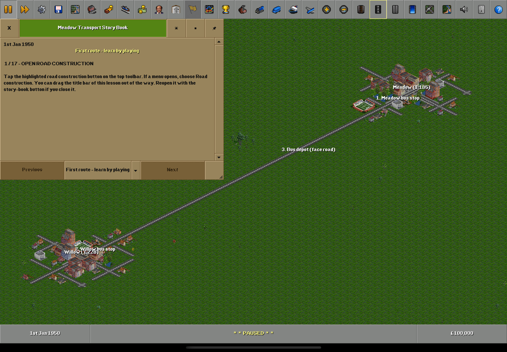

One more
route.
The OpenTTD you know.
A little more room for your fingers.
The original simulation. The familiar toolbar, windows and pixel art. A native touch adaptation that keeps the depth of the game we love.

Reinvent the touch.
Respect the game.
A railway still needs the same track, signals, stations, orders and economics. Gameplay stays in the original engine. The work here is the layer between your hands and that world.
The full C++ game runs in UIKit, with its CPU-rendered world presented through Metal. Touch reaches the original camera and validated construction commands.
Touch that understands the tools
Pan with one finger, pinch between original zoom levels, and use two fingers to navigate while a construction tool is active.A first route, one task at a time
An original-style GameScript lesson uses Story Book instructions and highlights, then checks what you actually built and configured.Keep community content close
Use the original content infrastructure and native document import. Existing compatibility needs testing, not a proprietary replacement mod format.
Fork it.
Try the idea.
Make a touch target better. Add a lesson. Try an accessibility improvement. Test a strange save. Help make a deep game easier to begin without making it smaller.
Start small, preserve the original rules, and show what you tested. Experiments and thoughtful bug reports are welcome.
Find your first contribution ↗Substantial Codex assistance was used in development. The icon is AI-generated. Screenshots and gameplay claims are based on actual runtime evidence.
Your Mac.
Your simulator.
Your company.
Use an Apple Silicon Mac, full Xcode and Python 3.12+. The build downloads pinned upstream source and free graphics/sounds. Choose your own signing team for a physical device.
Read the build instructions ↗./script/bootstrap_tools.sh
./script/build_reference.sh
./script/build_ipad_app.sh xcode
open build/ipad-xcode/OpenTTDPad.xcodeprojTestFlight and App Store distribution are pending. No store download or approval is claimed.
How complete is it?
Real bus and rail routes, orders, passenger transport, fares, save round-trips and a compatible NewGRF have been exercised in owned simulators. A signed prototype has launched on a physical iPad. Full feature parity, multiplayer, physical gameplay/performance, music, PNG/LZO support and continuous pinch scaling remain open. See test status.
Is this an official OpenTTD release?
No. It is an independent experimental adaptation. The OpenTTD project and its contributors deserve the engine and community credit; this project does not claim their endorsement. Visit openttd.org for official releases.
Can I use the code in my own fork?
Yes, under the applicable GPL-2.0 and component licences. Preserve notices and provide corresponding source when distributing covered binaries. Community assets retain their own licences. Store distribution needs its own compliance review.